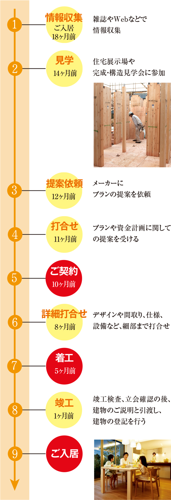
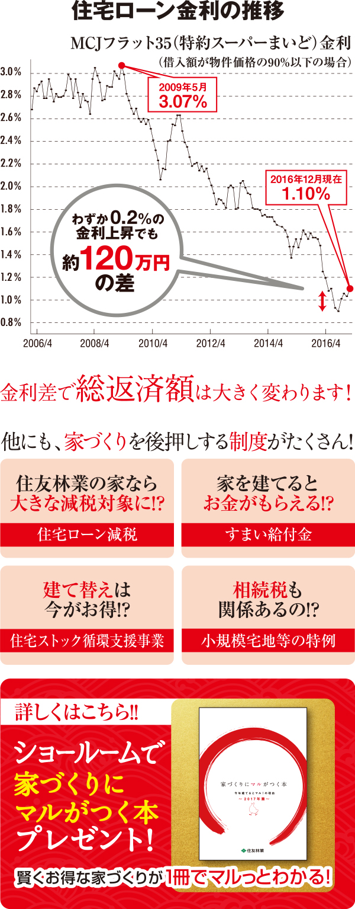

![第二弾 1月14日[土]・15日[日] ご家族の夢の住まいをカタチに! 新春!家づくり設計相談会 ■全国の住友林業のショールームにて開催 [予約制] ※会場により開催日が異なる場合がございます。詳しくはお問い合わせください。](images/2nd_011415.jpg)

理想の住まいを建てるためには、ご家族の暮らしにあった間取りを考えることが重要です。平屋、2階建て、3階建て、二世帯住宅...。展示場では、様々なスタイルの間取りをご案内します。

家を建てるのに、"いったいどれくらいお金が掛かるのだろう"と気になりませんか？展示場ではご希望の計画から概算の費用を知ることができます。将来のことも考えた総合的な資産計画をお伝えします。
![[建物工事費]建物本体そのものの費用と、それに関係する費用のことです。 [付帯工事費]建物本体以外の暮らしに必要なライフラインや、快適な暮らしを実現するための設備に関する費用です。 [土地取得費]新たに土地を土地を取得して家を建築する場合に必要な費用です。 [諸経費]住宅ローンを借りる場合の手続き費用や手数料、さらに税金や保険金など、こちらも必要な費用です。](images/point2_accordion.jpg)

家づくりのために、いつまでに何をやらなければならないのか？展示場では、情報収集からメーカー選定、ご入居までのスケジュールをご家族ごとのケースにあわせてわかりやすくお伝えします。
10年ほど前と比べると、金利は大幅に低下しており、超低金利が続いています。将来金利が上昇する可能性も考えられるため。住宅ローンを利用するならやはり、低金利のメリットを享受したいところです。
